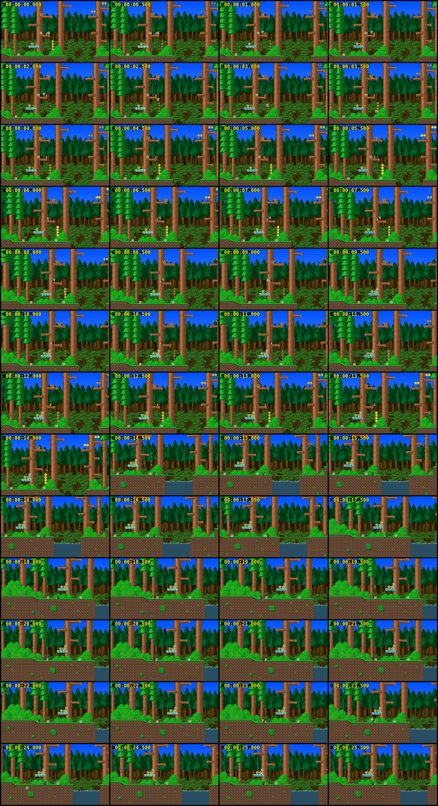
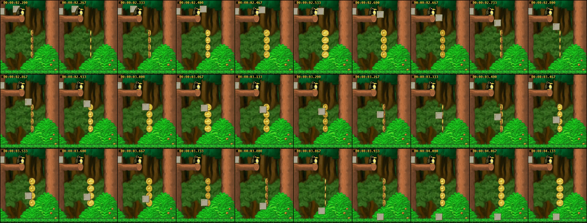
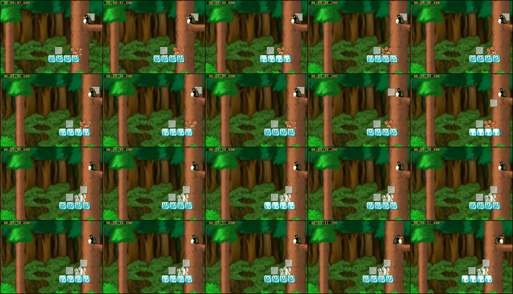
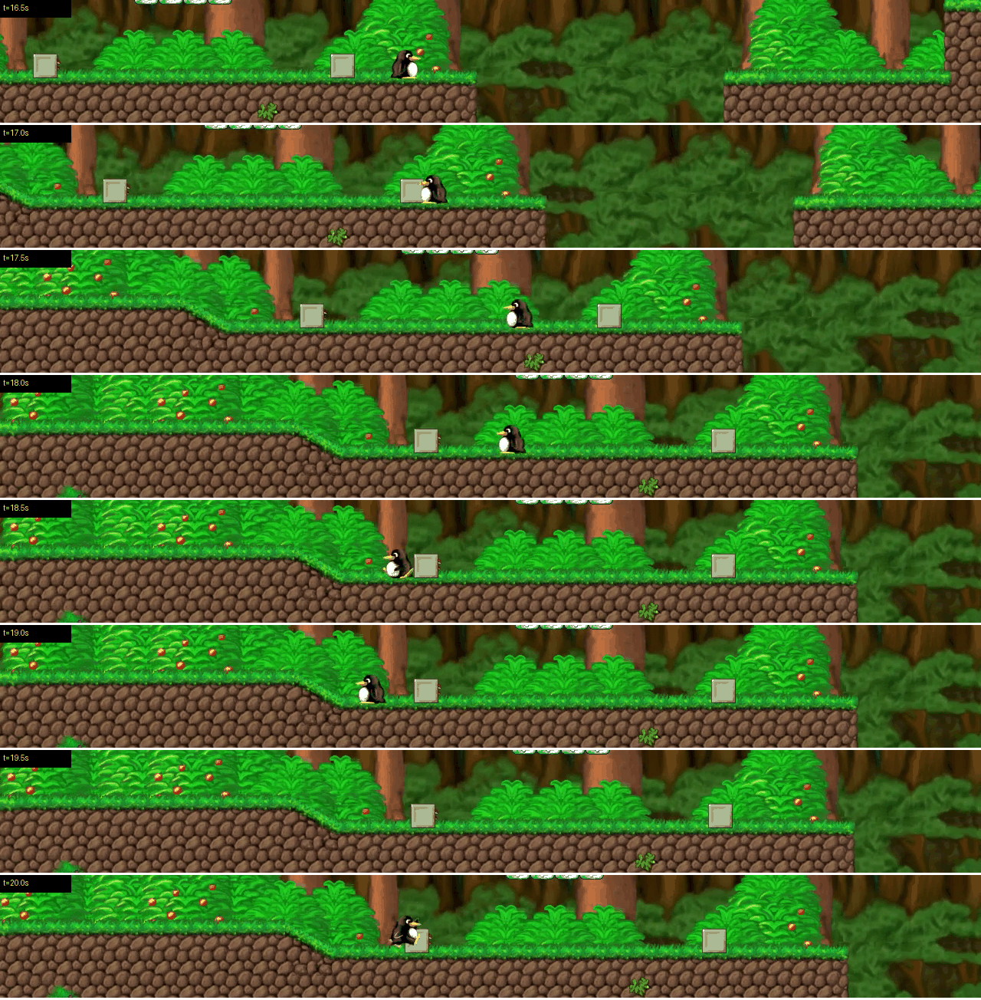
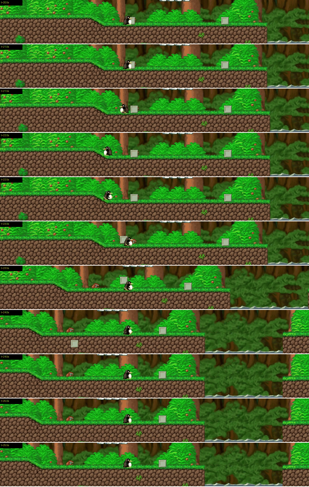

Eval: supertux__supertux_1398_mm
Only Difficulty fails: with-image pass@4 is 2/4, and Option A needs exactly 1/4. No-image is a correct 0/3. The other 18 dimensions pass. Symptom Specificity is a non-fail 3 (the defects other than the carry side are left to the clip). The gate, tests and evidence were all verified locally: oracle 1.0, nop 0.0, identical re-run, per-defect isolation, and an alternative fix that scores 10/10.
Scorecard
Every dimension in rubric order. Click a cell to see what is wrong (or the evidence, if it passed).
task.toml 7,187 B, instruction.md 1,087 B, evidence_bundle.json 1,104 B, environment/Dockerfile 4,307 B, environment/assets/ASSET_MANIFEST.json 541 B, solution/fix.patch 4,023 B, solution/solve.sh 349 B, tests/config.json 751 B, tests/test.patch 18,211 B, tests/test.sh 10,145 B, tests/verifier.py 8,158 B. The three JSON files parse, task.toml parses (tomllib), and py_compile tests/verifier.py succeeds. recording.mp4 decodes (ffprobe: h264 1280x720, 30 fps, 780 frames, 26.000 s; every frame extracted). All text files use LF. Extra files: README.md and environment/bugs/bug_01..05.patch (the injected bugs). Neither is a fail.task108/Attempt5/ has Tasks/ (capital T) and Trials/ as root-level siblings. Tasks/supertux__supertux_1398_mm/ is the bundle. Trials/without_images/ holds 3 runs (Cg3CUd4, Gdf5AUp, ktEgqvp) and Trials/with_images/ holds 4 (6rfz4NT, GHMqPaD, PDeVuwP, yCYGP4T), so there are 7 trials, the Option A count. The bundle was reviewed as unpacked folders because this local check had no .tar.gz files.Rock::collision treats touchable coins as something to land on) and the walking leaf freezing (BadGuy::collision_tile in src/badguy/badguy.cpp, outside the rock code). The trials agree (corroboration only, not proof): all 3 no-image runs found /app/.harbor_assets empty (step 3 in each), fixed 4 of the 6 defects by reading code, and each missed exactly the coin and leaf f2p (5/7).The image path resolves to
/app/.harbor_assets/recording.mp4 (Dockerfile COPY assets/recording.mp4 /app/.harbor_assets/).Leak scan of
instruction.md (195 words): no repo name, URL, org, issue or PR link, file list or mechanism. "Tux" is the in-game character the agent sees in the repo anyway, so it does not reveal the source. The title "Some objects misbehave in the forest" is neutral.[Non-Fail - Image-carried Symptom] flag. It is not a fail; record it in the feedback.Non-graded: three of those five defects (throw direction, Tux meeting a resting rock, the enemy hit) have no correct counterpart in the clip, so "don't match the same kind of thing elsewhere in the same clip" does not apply to them; only "or that look out of place in this level" does.
task_type = "temporal_interaction" means fixing a defect that only appears across a sequence of interactions or state transitions. The instruction describes defects across a grab → carry → let go → fall → rest → contact sequence. Each one is visible only over time in the 26 s clip (the fall speed past the coins, the throw direction, sinking after the throw, Tux passing through). The text reasonably falls under the type.| file | role | what the frames show (how verified) | what name / role / instruction claim | true? | agents confused? |
|---|---|---|---|---|---|
recording.mp4 | bug_video | the buggy build with all 6 defects (dimension 4 table). Checked against the local nop failure values: rock centre 21 px behind Tux; throw moves −50 px; thrown rock bottom at y 2996 (through the floor); 94 vs 41 frames past the coins; Tux bottom 416 inside the rock (top 384); leaf still standing | neutral name; role is bug video; instruction says "several things … are not how those objects work in this game"; description says it is the forest level world2/walking_leaves.stl with extra objects, a coin column and a walking leaf. That level exists in the repo with 19 walking leaves and no rocks, so the rocks and coins were added, as described | yes | no: all 4 with-image runs treated it as the buggy state |
Does each f2p grade what the asset shows? (steps 1–4; runs in the locally built task image):
| f2p | preconditions (test.patch) | asset state | reachable? | only that golden part applied | golden minus that part |
|---|---|---|---|---|---|
| DroppedRockFallsPastCoinsLikeThroughOpenAir | rock put down while standing at a ledge end (vx = 0, so the solid group is restored), falls past 3 coins; frames compared with an open-air drop; coins kept | 2.4 s: rock put down at the branch end crawls down a 4-coin column (3.0–3.9 s); the coins stay | yes, same branch (vy > 200, hit.bottom on a TOUCHABLE coin) | P0 alone: this f2p flips, nothing else | fails only this f2p |
| CarriedRockIsHeldInFrontOfTux | walks right, then left, carrying | behind Tux facing right and facing left | yes | P1 alone flips only it | fails only it |
| RockThrownWhileWalkingFliesForward | released while walking, both directions | 23.7–24.0 s: released while walking right, flies left | yes (right shown; left is the mirror) | P2 alone flips only it | fails only it |
| ThrownRockLandsAndStaysOnTheGround | thrown while walking; lying still on the floor 2 s later | same throw; rock inside the dirt at 24.0 s, then gone | yes | P3 alone flips only it | fails only it |
| TuxCanStandOnARestingRock | Tux falls onto a resting rock | 20.0–21.0 s: Tux stands inside a resting rock after a jump | yes | P4 alone flips both Tux tests | fails both Tux tests |
| TuxWalkingIntoARestingRockIsStoppedByIt | walks into a resting rock without the action key | 17.0 s and 18.5 s: Tux walks through resting rocks | yes | P4 (as above) | as above |
| RockDroppedOnAWalkingLeafKnocksItOut | rock dropped from a ledge onto a walking leaf pacing below | 9.2–9.6 s: rock dropped from the branch onto the leaf on the ?-blocks; the leaf becomes an ice block with the rock on top | yes | P5 alone flips only it | fails only it |
fix.patch.Step 5, upstream: issue #1398 "Throwable objects interact with coins" (they fall more slowly through a line of coins). PR #1449 changes exactly
if (moving_object && moving_object->get_group() != COLGROUP_TOUCHABLE), and base + fix.patch gives upstream's fixed rock.cpp blob e46de4e. The clip shows that same symptom.Step 6, trials: both passing runs give causes that hold in the clip's scene. No run copies upstream comments. The failing runs miss different f2p (coin; the Tux pair), and each miss is an unfixed defect.
Step 7, injected bugs (
environment/bugs/bug_01–05): every one is visible in the clip and graded by its own f2p. Is a fix that skips one complete? No, in every case. For example, skipping bug_05 keeps BadGuy::collision_tile (src/badguy/badguy.cpp 318–325) freezing any freezable enemy hit by HURTS (the ice block at 9.6 s). Skipping bug_04 keeps the Player::collides override (src/object/player.cpp 1687–1694) that lets Tux pass resting rocks (17.0 s).temporal_interaction is one of the seven values and fits the asset: a 26 s uncut video of an interaction sequence (grab, carry, release, fall, rest, contact) whose defects only show over time. visual_bug_fix would also be defensible, and the rubric does not penalize a valid choice.| reference | file | path | sha256 | bytes |
|---|---|---|---|---|
| file on disk | environment/assets/recording.mp4 | (copied by COPY assets/recording.mp4 /app/.harbor_assets/) | f7f5bbcf…d9859 | 2,571,782 |
ASSET_MANIFEST.json | recording.mp4 | container_path /app/.harbor_assets/recording.mp4 | same | same |
evidence_bundle.json | recording.mp4 | local_path and container_path /app/.harbor_assets/recording.mp4, role bug_video | same | same |
instruction.md | recording.mp4 | /app/.harbor_assets/recording.mp4 | n/a | n/a |
url and source_url are empty with source_kind: captured_from_repo, which is allowed.environment/, at harbor_base: git apply --check /solution/fix.patch succeeds. The solve.sh log shows + git apply /solution/fix.patch and "Applied fix.patch." with exit 0. Base + fix.patch gives upstream's fixed rock.cpp (e46de4e) and upstream's base player.cpp/player.hpp/badguy.cpp (44dfa67/983fe05/ca20e4b), so the golden is the upstream fix plus the five bug reverts.diff --git paths {src/badguy/badguy.cpp, src/object/player.cpp, src/object/player.hpp, src/object/rock.cpp} equal files_edited as a set. There is no test, doc, lockfile or changeset path. test.patch touches only tests/rock_behaviour_test.cpp (= config.json test_files). solve.sh applies only fix.patch.| assertion | what it accepts | grounded in |
|---|---|---|
| coins: frames to floor ≤ open-air frames + 2; coin count unchanged | any fix where coins don't hold the rock up (the open-air baseline is measured on the candidate's own build) | issue #1398, clip 3.0–3.9 s; Coin::collision never lets a non-player collect (coin.cpp 183–191) |
| carry: rock centre strictly on the facing side, both directions | any in-front hold offset | clip |
| throw: ≥ 16 px forward in 0.25 s | any forward throw of at least about 64 px/s (base throws at 200 px/s) | clip |
| landed: bottom within 2 px of the floor and still (±1 px) 2 s after the throw | any landing, including a short slide | clip |
| stand / walk into: Tux bottom within 2 px of the rock top; Tux right ≤ rock left + 2 | any solid resting rock | clip |
| leaf: no enemy left above the floor 4 s later | the repo's own knock-out, kill_fall(), which the rock reaches through collision_tile(Tile::HURTS). A squish would not count: the test calls Sector::update directly, which never advances g_game_time (only ScreenManager does, screen_manager.cpp line 507), so the 2 s squish timer never expires | clip; no object in src/object calls kill_squished (protected, used only for stomps), while the objects that knock enemies out (block bumps, explosions, ice crusher, hurting platform) all call kill_fall() |
| alternative | valid / plausible (repo precedent) | result |
|---|---|---|
ALT-B, six changes written differently from the golden: an early return ABORT_MOVE for COLGROUP_TOUCHABLE next to the existing HeavyCoin/Explosion early returns; a flipped ternary for the hold offset; a flipped comparison for the release direction; an unconditional set_group(COLGROUP_MOVING_STATIC) in ungrab that keeps the landing line; Player::collides kept but limited to grabbed objects; a compound (tile_attributes & Tile::ICE) && is_freezable() | plausible: each one mirrors code already in rock.cpp, player.cpp or badguy.cpp | 10/10 |
trial 6rfz4NT's submission: dynamic_cast<Coin*> skip, override limited to the carried object, plus a wall-stop change | plausible | 10/10 (trial verifier) |
| trial PDeVuwP's submission: touchable check, flipped comparisons | plausible | 10/10 (trial verifier) |
| upstream PR #1449 coin fix | upstream | identical to the golden coin hunk |
"Fix only what the evidence shows": each golden part alone flips exactly its own f2p, so no f2p grades a state the clip doesn't show.
Structure level: the only fixed counts are the one-rock / one-leaf test rooms (setup asserts) and "coins not used up", which is base behavior.
task.toml f2p (7) and p2p (3) lists are identical to config.json (same order), with no overlap. Each id, RockBehaviour <Name>, matches exactly one JUnit testcase (classname RockBehaviour, name <Name>) in the local oracle report. It is an exact key in verifier.py's resolve(), with no suffix ambiguity. test.sh builds the gtest filter from the same ids (RockBehaviour.<Name>).FRAME = 1/64 s) through Sector::update, with scripted-controller input, VIDEO_NULL, and sound and music disabled. There is no wall clock, no network and no font rendering. test.sh installs nothing (cmake configure plus an incremental build), so [verifier] network_mode = "public" is more than needed but is not a Network Configuration fail. The local oracle and the oracle re-run give the same per-test result, and the CB's oracle and nop match. 5 fresh processes per state, each with a different --gtest_shuffle seed: base gave the same 7 f2p failures and 3 p2p passes every time, golden 10/10 every time.environment/bugs/) are small, coherent regressions in real code paths: the hold offset, the release direction, the group restore, a Player::collides override and a freeze branch. Each is visible in the clip, and the golden is the natural revert, code a real developer would write. It is feasible: 2 of 4 with-image runs fixed all six in 3.9–6.3 agent-minutes.Attempt5/Tasks/.../environment (every layer was a cache hit, so the inputs are identical). Runs used --network none.| run | reward | f2p | p2p | time |
|---|---|---|---|---|
| local oracle | 1.0 | 7/7 | 3/3 | 108 s |
| local oracle re-run | 1.0 (same per test) | 7/7 | 3/3 | 108 s |
| local nop | 0.0 | 0/7 | 3/3 | 46 s |
| CB oracle DURkPv8 | 1.0 | 7/7 | 3/3 | 11.7 min |
| CB nop ggcCsN9 | 0.0 | 0/7 | 3/3 | 1.8 min |
== applying test.patch ==, == running f2p + p2p tests ==, == computing reward ==, reward=) are present. There is no "could not apply test.patch".Delivery gate
Process checks run locally or read from the submitted runs. Each failure is scored under the dimension it belongs to, not as an extra dimension.
environment/, --network none, 108 s.d75c345b…) as the with-image trials.git apply --check /solution/fix.patch OK at harbor_base; solve.sh exit 0.reward= present; no "could not apply test.patch".--gtest_shuffle seed: base gave the same 7 f2p failures and 3 p2p passes every time, golden 10/10 every time./app/.harbor_assets empty in every run.task_manifest.json file hashes = this bundle; with-image d75c345b… = CB oracle/nop; no-image variant 2e1fe540… (assets stripped).Tasks/ and Trials/ are root siblings with 3 + 4 trials; reviewed as folders, so tar each separately at submission./app/.harbor_assets/recording.mp4 with matching sha256 and bytes.Trials
3 no-image runs (pass@3, all must fail) and 4 with-image runs (pass@4, exactly 1 must pass). Rewards come from each run's verifier/reward.txt.
| Trial | Mode | Reward | f2p | p2p | Min | Failed tests |
|---|---|---|---|---|---|---|
task_without_images__Cg3CUd4 | no-image | 0.0 | 5/7 | 3/3 | 9.1 | DroppedRockFallsPastCoinsLikeThroughOpenAir RockDroppedOnAWalkingLeafKnocksItOut |
task_without_images__Gdf5AUp | no-image | 0.0 | 5/7 | 3/3 | 6.2 | DroppedRockFallsPastCoinsLikeThroughOpenAir RockDroppedOnAWalkingLeafKnocksItOut |
task_without_images__ktEgqvp | no-image | 0.0 | 5/7 | 3/3 | 5.0 | DroppedRockFallsPastCoinsLikeThroughOpenAir RockDroppedOnAWalkingLeafKnocksItOut |
task_with_images__6rfz4NT | with-image | 1.0 | 7/7 | 3/3 | 6.0 | — |
task_with_images__GHMqPaD | with-image | 0.0 | 5/7 | 3/3 | 9.4 | TuxCanStandOnARestingRock TuxWalkingIntoARestingRockIsStoppedByIt |
task_with_images__PDeVuwP | with-image | 1.0 | 7/7 | 3/3 | 8.4 | — |
task_with_images__yCYGP4T | with-image | 0.0 | 6/7 | 3/3 | 9.3 | DroppedRockFallsPastCoinsLikeThroughOpenAir |
Issues & suggested fixes
Hardening - Difficulty (Model Trial Fails) 2 · [Fail - Trial Threshold Not Met]
What is wrong. With-image pass@4 is 2/4, but Option A requires exactly 1 pass and 3 fails. No-image is 0/3, which is correct. The task matches neither option.
Suggested fix. Lower the with-image solve rate a little. No-image already has margin: every no-image run misses both the coin and the leaf test.
Evidence from this set: what separated passes from fails was the coin crawl (yCYGP4T never noticed it) and the cause of the pass-through (GHMqPaD). Both passing runs examined the fall closely: 6rfz4NT at step 25 ("almost constant speed while it passes the coin column"), and PDeVuwP tracked the rock's y position per frame at step 24.
Options, cheapest first:
(1) Drop "how it falls," from the list. The coin crawl stays covered by "how it and the other things in the level affect each other", so dimension 4 stays a 3. Then re-run all 7 trials, because the checksum changes.
(2) Re-running unchanged as Option B (8 with-image runs, 1–2 passes) is unlikely to work: at the observed ~50% rate, P(1 or 2 of 8) ≈ 14%.
(3) Re-rolling pass@4 at ~50% lands exactly 1/4 only about 25% of the time.
Don't name coins, the leaf, enemies or freezing anywhere. Those two hidden defects are what keep the no-image runs at 0/3.
Instruction – Symptom Specificity 3 · [Non-Fail - Image-carried Symptom]
What is wrong. Only one defect is stated in words (carried on the wrong side). The other five are named by element only, and the exact defect is left to comparisons inside the clip. Under V27 that is the
[Non-Fail - Image-carried Symptom]flag. It is not a fail; record it in the feedback.
Non-graded: three of those five defects (throw direction, Tux meeting a resting rock, the enemy hit) have no correct counterpart in the clip, so "don't match the same kind of thing elsewhere in the same clip" does not apply to them; only "or that look out of place in this level" does.
Suggested fix. Optional; a 3 is acceptable. To reach a 5, each remaining defect would have to be stated in words without the cause. Example: "When Tux lets go of one while walking, it goes the wrong way; one that falls past other things in the level slows down; a thrown one doesn't stay on top of the ground; an enemy it lands on is not knocked out; Tux passes through one lying on the ground."
Caution: in this trial set, the no-image runs fix 4 of 6 defects from code alone and miss only the coin and leaf defects. Stating those two in words would very likely let no-image runs pass, which breaks dimension 16. Recommendation: keep the 3. Any change to instruction.md changes the task checksum, so all 7 trials must be re-run.
If you re-run anyway for dimension 16, you can make the pointer match the clip without adding a hint, e.g. "Some of them differ from the same kind of thing elsewhere in the clip; the others look wrong on their own for this game." The current sentence is not false (it is an either/or), only less exact.
Dimension details
1. Structure - Task Bundle Files 5 · Pass
| Evidence | All 11 fixed files exist and are non-empty: task.toml 7,187 B, instruction.md 1,087 B, evidence_bundle.json 1,104 B, environment/Dockerfile 4,307 B, environment/assets/ASSET_MANIFEST.json 541 B, solution/fix.patch 4,023 B, solution/solve.sh 349 B, tests/config.json 751 B, tests/test.patch 18,211 B, tests/test.sh 10,145 B, tests/verifier.py 8,158 B. The three JSON files parse, task.toml parses (tomllib), and py_compile tests/verifier.py succeeds. recording.mp4 decodes (ffprobe: h264 1280x720, 30 fps, 780 frames, 26.000 s; every frame extracted). All text files use LF. Extra files: README.md and environment/bugs/bug_01..05.patch (the injected bugs). Neither is a fail. |
|---|---|
| What is wrong | Nothing found. |
| Suggested fix | None. |
2. Structure - Deliverables & Packaging 5 · Pass
| Evidence | task108/Attempt5/ has Tasks/ (capital T) and Trials/ as root-level siblings. Tasks/supertux__supertux_1398_mm/ is the bundle. Trials/without_images/ holds 3 runs (Cg3CUd4, Gdf5AUp, ktEgqvp) and Trials/with_images/ holds 4 (6rfz4NT, GHMqPaD, PDeVuwP, yCYGP4T), so there are 7 trials, the Option A count. The bundle was reviewed as unpacked folders because this local check had no .tar.gz files. |
|---|---|
| What is wrong | Nothing found. The layout is correct. Only the folder layout could be checked here, not the final archives. |
| Suggested fix | When you package, tar from inside Attempt5/ so each archive unpacks to its own top-level folder: tar -czf Tasks.tar.gz Tasks and tar -czf Trials.tar.gz Trials. Keep Check/ and Analyze/ out of both. |
3. Instruction - Requires the Visual Evidence 5 · Pass
| Evidence | Without the video, the text names only "the objects Tux grabs" and five abstract areas, and states one defect (carried on the wrong side). It names no object, file, coin, enemy, freeze or mechanism. From the text alone, two defects cannot be diagnosed because the code looks plausible: the rock crawling down the coin column (upstream #1398, Rock::collision treats touchable coins as something to land on) and the walking leaf freezing (BadGuy::collision_tile in src/badguy/badguy.cpp, outside the rock code). The trials agree (corroboration only, not proof): all 3 no-image runs found /app/.harbor_assets empty (step 3 in each), fixed 4 of the 6 defects by reading code, and each missed exactly the coin and leaf f2p (5/7).The image path resolves to /app/.harbor_assets/recording.mp4 (Dockerfile COPY assets/recording.mp4 /app/.harbor_assets/).Leak scan of instruction.md (195 words): no repo name, URL, org, issue or PR link, file list or mechanism. "Tux" is the in-game character the agent sees in the repo anyway, so it does not reveal the source. The title "Some objects misbehave in the forest" is neutral. |
|---|---|
| What is wrong | Nothing found. |
| Suggested fix | None. |
4. Instruction – Symptom Specificity 3 · Non-Fail
[Non-Fail - Image-carried Symptom]
| Evidence | Prompt table (times are from the clip):
Every with-image trajectory:
[Fail - Unspecific Symptoms]. | ||||||||||||||||||||||||||||||||||||||||||||||||||||||||||||||
|---|---|---|---|---|---|---|---|---|---|---|---|---|---|---|---|---|---|---|---|---|---|---|---|---|---|---|---|---|---|---|---|---|---|---|---|---|---|---|---|---|---|---|---|---|---|---|---|---|---|---|---|---|---|---|---|---|---|---|---|---|---|---|---|
| What is wrong | Only one defect is stated in words (carried on the wrong side). The other five are named by element only, and the exact defect is left to comparisons inside the clip. Under V27 that is the [Non-Fail - Image-carried Symptom] flag. It is not a fail; record it in the feedback.Non-graded: three of those five defects (throw direction, Tux meeting a resting rock, the enemy hit) have no correct counterpart in the clip, so "don't match the same kind of thing elsewhere in the same clip" does not apply to them; only "or that look out of place in this level" does. | ||||||||||||||||||||||||||||||||||||||||||||||||||||||||||||||
| Suggested fix | Optional; a 3 is acceptable. To reach a 5, each remaining defect would have to be stated in words without the cause. Example: "When Tux lets go of one while walking, it goes the wrong way; one that falls past other things in the level slows down; a thrown one doesn't stay on top of the ground; an enemy it lands on is not knocked out; Tux passes through one lying on the ground." Caution: in this trial set, the no-image runs fix 4 of 6 defects from code alone and miss only the coin and leaf defects. Stating those two in words would very likely let no-image runs pass, which breaks dimension 16. Recommendation: keep the 3. Any change to instruction.md changes the task checksum, so all 7 trials must be re-run.If you re-run anyway for dimension 16, you can make the pointer match the clip without adding a hint, e.g. "Some of them differ from the same kind of thing elsewhere in the clip; the others look wrong on their own for this game." The current sentence is not false (it is an either/or), only less exact. |
5. Instruction – Task Type 5 · Pass
| Evidence | task_type = "temporal_interaction" means fixing a defect that only appears across a sequence of interactions or state transitions. The instruction describes defects across a grab → carry → let go → fall → rest → contact sequence. Each one is visible only over time in the 26 s clip (the fall speed past the coins, the throw direction, sinking after the throw, Tux passing through). The text reasonably falls under the type. |
|---|---|
| What is wrong | Nothing found. |
| Suggested fix | None. |
6. Image - Evidence Quality 5 · Pass
| Evidence | Naming and truth table:
Does each f2p grade what the asset shows? (steps 1–4; runs in the locally built task image):
fix.patch.Step 5, upstream: issue #1398 "Throwable objects interact with coins" (they fall more slowly through a line of coins). PR #1449 changes exactly if (moving_object && moving_object->get_group() != COLGROUP_TOUCHABLE), and base + fix.patch gives upstream's fixed rock.cpp blob e46de4e. The clip shows that same symptom.Step 6, trials: both passing runs give causes that hold in the clip's scene. No run copies upstream comments. The failing runs miss different f2p (coin; the Tux pair), and each miss is an unfixed defect. Step 7, injected bugs ( environment/bugs/bug_01–05): every one is visible in the clip and graded by its own f2p. Is a fix that skips one complete? No, in every case. For example, skipping bug_05 keeps BadGuy::collision_tile (src/badguy/badguy.cpp 318–325) freezing any freezable enemy hit by HURTS (the ice block at 9.6 s). Skipping bug_04 keeps the Player::collides override (src/object/player.cpp 1687–1694) that lets Tux pass resting rocks (17.0 s). | ||||||||||||||||||||||||||||||||||||||||||||||||||||||||||||
|---|---|---|---|---|---|---|---|---|---|---|---|---|---|---|---|---|---|---|---|---|---|---|---|---|---|---|---|---|---|---|---|---|---|---|---|---|---|---|---|---|---|---|---|---|---|---|---|---|---|---|---|---|---|---|---|---|---|---|---|---|---|
| What is wrong | Nothing found. | ||||||||||||||||||||||||||||||||||||||||||||||||||||||||||||
| Suggested fix | None. |
7. Metadata - task_type Accuracy 5 · Pass
| Evidence | temporal_interaction is one of the seven values and fits the asset: a 26 s uncut video of an interaction sequence (grab, carry, release, fall, rest, contact) whose defects only show over time. visual_bug_fix would also be defensible, and the rubric does not penalize a valid choice. |
|---|---|
| What is wrong | Nothing found. |
| Suggested fix | None. |
8. Evidence - Chain Consistency 5 · Pass
| Evidence | The four references:
url and source_url are empty with source_kind: captured_from_repo, which is allowed. | |||||||||||||||||||||||||
|---|---|---|---|---|---|---|---|---|---|---|---|---|---|---|---|---|---|---|---|---|---|---|---|---|---|---|
| What is wrong | Nothing found. | |||||||||||||||||||||||||
| Suggested fix | None. |
9. Golden Fix - Applies Cleanly 5 · Pass
| Evidence | In the image built locally from environment/, at harbor_base: git apply --check /solution/fix.patch succeeds. The solve.sh log shows + git apply /solution/fix.patch and "Applied fix.patch." with exit 0. Base + fix.patch gives upstream's fixed rock.cpp (e46de4e) and upstream's base player.cpp/player.hpp/badguy.cpp (44dfa67/983fe05/ca20e4b), so the golden is the upstream fix plus the five bug reverts. |
|---|---|
| What is wrong | Nothing found. |
| Suggested fix | None. |
10. Golden Fix - Source-Only Scope 5 · Pass
| Evidence | The diff --git paths {src/badguy/badguy.cpp, src/object/player.cpp, src/object/player.hpp, src/object/rock.cpp} equal files_edited as a set. There is no test, doc, lockfile or changeset path. test.patch touches only tests/rock_behaviour_test.cpp (= config.json test_files). solve.sh applies only fix.patch. |
|---|---|
| What is wrong | Nothing found. |
| Suggested fix | None. |
11. Tests - Implementation Overfit 5 · Pass
| Evidence | Every assertion is geometric or behavioral with a tolerance. None compares strings, enums, colours, number formats or source text.
"Fix only what the evidence shows": each golden part alone flips exactly its own f2p, so no f2p grades a state the clip doesn't show. Structure level: the only fixed counts are the one-rock / one-leaf test rooms (setup asserts) and "coins not used up", which is base behavior. | ||||||||||||||||||||||||||||||||||||
|---|---|---|---|---|---|---|---|---|---|---|---|---|---|---|---|---|---|---|---|---|---|---|---|---|---|---|---|---|---|---|---|---|---|---|---|---|---|
| What is wrong | Nothing found. The coin test is lenient (a coin-only special case also passes). The leaf test accepts the repo's own knock-out (kill_fall) but not a timer-based squish, because the test loop never advances the game clock. That is not overfit: a rock can't squish an enemy without changing BadGuy (kill_squished is protected), and no object in the repo knocks enemies out that way. | ||||||||||||||||||||||||||||||||||||
| Suggested fix | None. |
12. Tests - f2p/p2p Identifier Validity 5 · Pass
| Evidence | The task.toml f2p (7) and p2p (3) lists are identical to config.json (same order), with no overlap. Each id, RockBehaviour <Name>, matches exactly one JUnit testcase (classname RockBehaviour, name <Name>) in the local oracle report. It is an exact key in verifier.py's resolve(), with no suffix ambiguity. test.sh builds the gtest filter from the same ids (RockBehaviour.<Name>). |
|---|---|
| What is wrong | Nothing found. |
| Suggested fix | None. |
13. Tests - p2p Classification 5 · Pass
| Evidence | The 3 p2p (CarriedRockMovesAlongWithTux, PutDownRockLandsOnTheGround, RockDroppedOnARestingRockStaysOnTop) pass on the local nop, the local oracle, the oracle re-run, the CB's nop and oracle, and in all 7 trials. |
|---|---|
| What is wrong | Nothing found. |
| Suggested fix | None. |
14. Tests - Discriminating (f2p) 5 · Pass
| Evidence | All 7 f2p fail on nop (local and CB) and pass on oracle. The nop failure values are the defects themselves: 94 vs 41 frames past the coins; the rock centre 21 px behind Tux walking right and 18–20 px behind walking left; the thrown rock moves −50 / +50 px; the thrown rock's bottom is at y 2996 (through the floor); Tux stands inside or walks through the rock; the leaf is still standing. Per-part isolation shows each f2p flips only with its own golden part. |
|---|---|
| What is wrong | Nothing found. |
| Suggested fix | None. |
15. Tests - Determinism 5 · Pass
| Evidence | Simulation runs on a fixed logical step (FRAME = 1/64 s) through Sector::update, with scripted-controller input, VIDEO_NULL, and sound and music disabled. There is no wall clock, no network and no font rendering. test.sh installs nothing (cmake configure plus an incremental build), so [verifier] network_mode = "public" is more than needed but is not a Network Configuration fail. The local oracle and the oracle re-run give the same per-test result, and the CB's oracle and nop match. 5 fresh processes per state, each with a different --gtest_shuffle seed: base gave the same 7 f2p failures and 3 p2p passes every time, golden 10/10 every time. |
|---|---|
| What is wrong | Nothing found. Non-graded note: the test harness can't be repeated inside one process (--gtest_repeat). The second iteration segfaults because GameEnvironment::TearDown shuts down SDL/PhysFS. test.sh runs each test once per process, so grading is unaffected. |
| Suggested fix | None. |
16. Hardening - Difficulty (Model Trial Fails) 2 · Fail
[Fail - Trial Threshold Not Met]
| Evidence | Rewards from each run's verifier/reward.txt:
task_without_images (checksum 2e1fe540…), and each saw an empty /app/.harbor_assets in step 3. With-image runs used task_with_images (checksum d75c345b…, the same as the CB's oracle and nop), and task_manifest.json lists the same file hashes as this bundle. All runs used claude-opus-5-5. Agent time was 2.2–7.0 min (5.0–9.4 min total), which is informational only. | ||||||||||||||||||||||||||||||||||||||||
|---|---|---|---|---|---|---|---|---|---|---|---|---|---|---|---|---|---|---|---|---|---|---|---|---|---|---|---|---|---|---|---|---|---|---|---|---|---|---|---|---|---|
| What is wrong | With-image pass@4 is 2/4, but Option A requires exactly 1 pass and 3 fails. No-image is 0/3, which is correct. The task matches neither option. | ||||||||||||||||||||||||||||||||||||||||
| Suggested fix | Lower the with-image solve rate a little. No-image already has margin: every no-image run misses both the coin and the leaf test. Evidence from this set: what separated passes from fails was the coin crawl (yCYGP4T never noticed it) and the cause of the pass-through (GHMqPaD). Both passing runs examined the fall closely: 6rfz4NT at step 25 ("almost constant speed while it passes the coin column"), and PDeVuwP tracked the rock's y position per frame at step 24. Options, cheapest first: (1) Drop "how it falls," from the list. The coin crawl stays covered by "how it and the other things in the level affect each other", so dimension 4 stays a 3. Then re-run all 7 trials, because the checksum changes. (2) Re-running unchanged as Option B (8 with-image runs, 1–2 passes) is unlikely to work: at the observed ~50% rate, P(1 or 2 of 8) ≈ 14%. (3) Re-rolling pass@4 at ~50% lands exactly 1/4 only about 25% of the time. Don't name coins, the leaf, enemies or freezing anywhere. Those two hidden defects are what keep the no-image runs at 0/3. |
17. Hardening - Real & Feasible 5 · Pass
| Evidence | This is a real issue: upstream #1398 (throwables are slowed by coins), fixed upstream by PR #1449's one-line check, which the golden contains verbatim. The five injected bugs (environment/bugs/) are small, coherent regressions in real code paths: the hold offset, the release direction, the group restore, a Player::collides override and a freeze branch. Each is visible in the clip, and the golden is the natural revert, code a real developer would write. It is feasible: 2 of 4 with-image runs fixed all six in 3.9–6.3 agent-minutes. |
|---|---|
| What is wrong | Nothing found. |
| Suggested fix | None. |
18. Gate - Oracle/Nop 5 · Pass
| Evidence | The image was built locally from Attempt5/Tasks/.../environment (every layer was a cache hit, so the inputs are identical). Runs used --network none.
== applying test.patch ==, == running f2p + p2p tests ==, == computing reward ==, reward=) are present. There is no "could not apply test.patch". | ||||||||||||||||||||||||||||||
|---|---|---|---|---|---|---|---|---|---|---|---|---|---|---|---|---|---|---|---|---|---|---|---|---|---|---|---|---|---|---|---|
| What is wrong | Nothing found. Non-graded cosmetic note: on nop the banner reads == captured submission.patch (0 bytes, 0 and breaks across lines, because grep -c prints 0 and exits 1, so || echo 0 adds a second 0. | ||||||||||||||||||||||||||||||
| Suggested fix | None. |
19. Unauditable 5 · Pass
| Evidence | The task is complete and auditable: the bundle, all 7 trials, and the oracle and nop runs are present, and everything was reproduced locally. |
|---|---|
| What is wrong | Nothing found. |
| Suggested fix | None. |
Visual evidence




